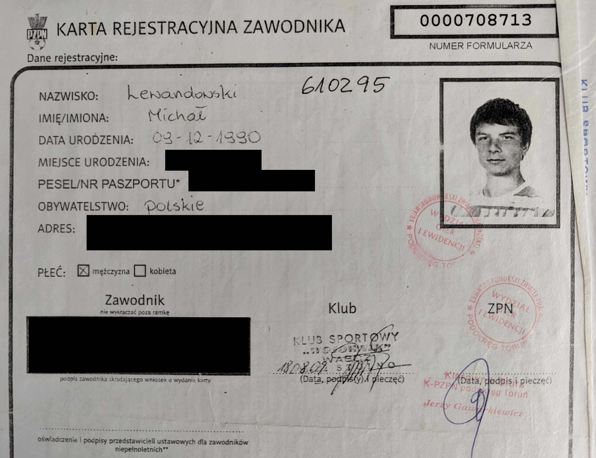
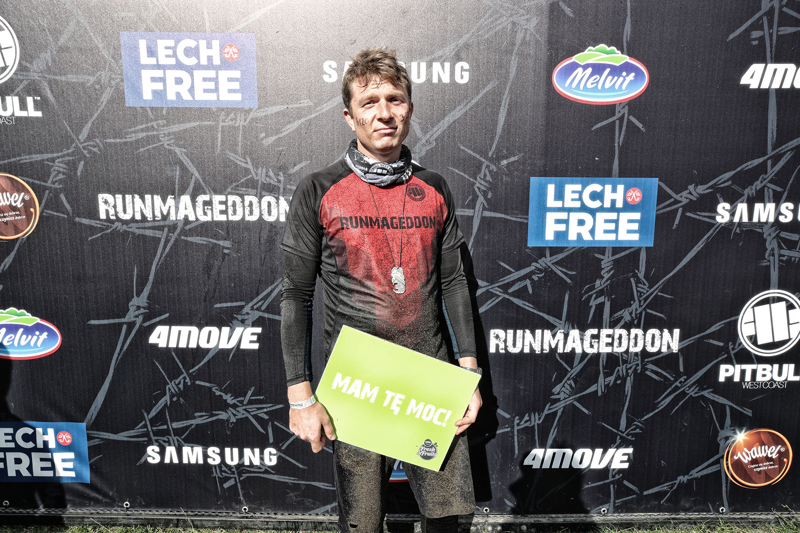
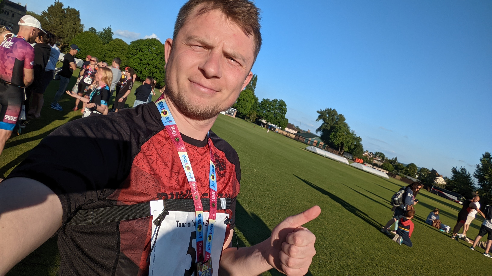

Back in the days I was a member of a local team. Unfortunately after an injury I had to stop playing football. It was my choice.
After recovery I've started doing some crossfit. To challenge myself I attended a 12km run with obstacles. It was fun.


To not be bored and keep the momentum I keep challenging myself physically. My greatest achievement is a small Triathlon in Bridgwater, England.